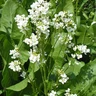

Plant Grimoire

HorseradishHorseradish (Armoracia rusticana; Cochlearia armoracia) is a fiery purifier that scatters malice and neutralizes sent work. It belongs to the Brassicaceae (Cruciferae) family.
Characteristics
A perennial plant with large leaves up to 50 cm long, small white flowers, and a thick whitish tapering root that propagates easily. It is possibly a cultivated form of Cochlearia macrocarpa, native to Hungary.
Origin & Distribution
Origins are uncertain, but the plant is probably native to eastern Europe. It is now common throughout Russia, Europe, and Scandinavia.
Folk Tradition
An extremely stimulating herb once valued as a household remedy, with an action similar to mustard seed. It has been used for fever, digestive complaints, and urinary infections, and as a circulatory aid. It is also taken for arthritis and rheumatism. The root is still widely used as a condiment, especially on the Continent. Its recorded actions include antibiotic, antiseptic, diuretic, carminative, expectorant, mild laxative, rubefacient, and stimulant.
Magickal Properties
Powers: Purification, Exorcism
Magickal Uses
- House clearing: Sprinkle dried and ground horseradish around the house, in corners, on outside steps, and on doorsills to drive out all evil powers and diffuse spells aimed at you.
- New Year's money luck: Carry a slice of horseradish in a purse or pocket on New Year's Eve to prevent running out of money in the coming year. (A tip attributed to Hildegard of Bingen.)